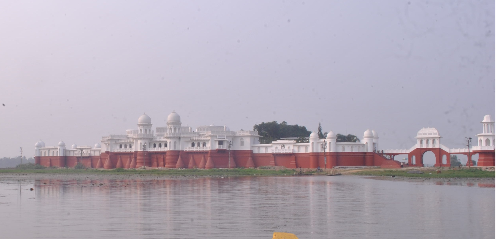
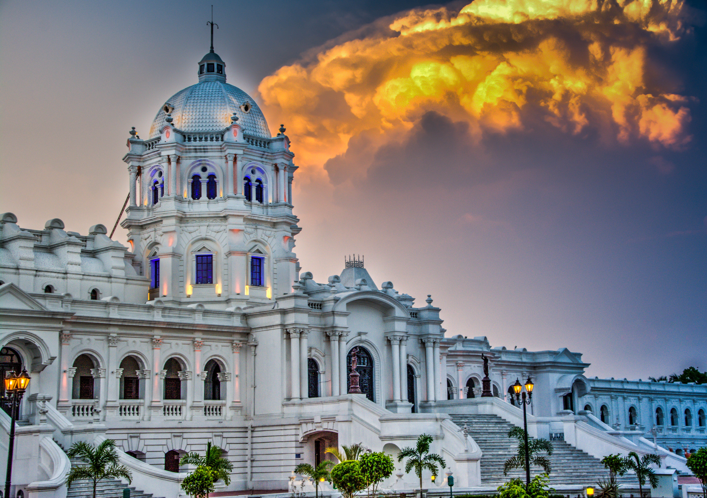

"Tripura overflows with history, royal heritage, and natural beauty. Once the kingdom of the Manikya dynasty for 1,300 years, it perfectly blends tribal culture with Bengali traditions."
"त्रिपुरा इतिहास, शाही विरासत और प्राकृतिक सुंदरता से भरपूर है। 1,300 वर्षों तक माणिक्य वंश का राज्य रहा। यहाँ जनजातीय संस्कृति और बंगाली परंपराओं का अनूठा संगम है।"
PLACES TO VISIT / घूमने के स्थान



NEERMAHAL WATER PALACE
नीरमहल - जल महल
The only water palace in Eastern India, sitting magically in the middle of Rudrasagar Lake. Built in 1930.
पूर्वी भारत का एकमात्र जल महल जो रुद्रसागर झील के मध्य में स्थित है। 1930 में निर्मित।



UJJAYANTA PALACE
उज्जयंता महल
Former royal palace of the Manikya kings in the heart of Agartala, now serving as the State Museum.
अगरतला के केंद्र में माणिक्य राजाओं का पूर्व राजमहल, जो अब राज्य संग्रहालय के रूप में कार्य कर रहा है।


UNAKOTI
उनाकोटि - शैल उत्कीर्णन
Massive 7th-9th century rock-cut bas-relief carvings of Lord Shiva. A UNESCO Tentative Heritage Site.
7वीं-9वीं सदी की विशाल चट्टान-कटी शिव मूर्तियाँ। यह यूनेस्को की अस्थायी विरासत सूची में है।
FOOD & CUISINE / भोजन
MUI BOROK
Traditional Tripuri cuisine which is generally prepared without oil, prominently featuring berma (fermented dry fish).
मुई बोरोक - पारंपरिक त्रिपुरी व्यंजन, जिसे बिना तेल पकाया जाता है। बेर्मा (किण्वित मछली) मुख्य है।
SHOPPING / खरीदारी
RIGNAI & RISA
Handloom wrap-around skirt (rignai) and upper breast cloth (risa) woven in bold geometric patterns.
रिग्नाई और रिसा - बोल्ड ज्यामितीय पैटर्न में बुने गए पारंपरिक त्रिपुरी हस्तशिल्प वस्त्र।
CANE FURNITURE
Agartala is known globally for exquisite, high-quality cane and bamboo craftsmanship.
अगरतला विश्व स्तर पर उत्कृष्ट और उच्च गुणवत्ता वाले बाँस-बेंत फर्नीचर के लिए जाना जाता है।